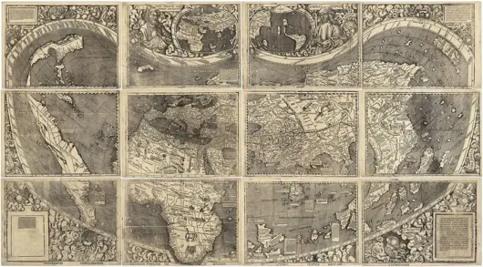
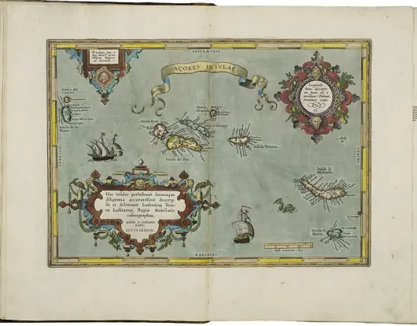
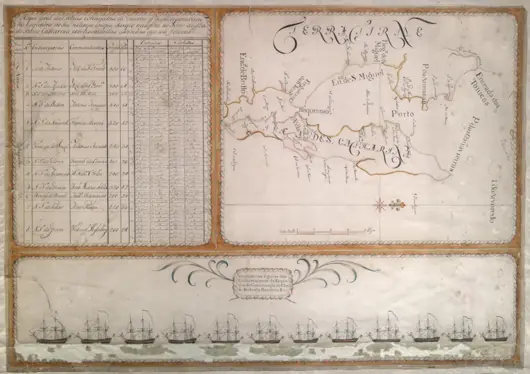
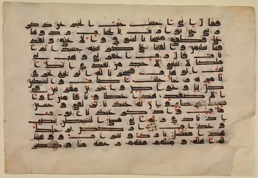
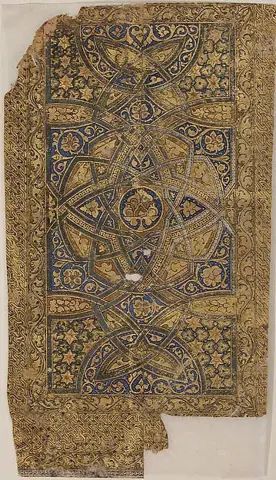

Notas do arquivo
Fontes e Créditos de Imagem
As notas de cada página indicam os registros, catálogos e estudos usados em cada tema. Os créditos identificam a fonte e os direitos de cada imagem.
Fontes geográficas
- Fontes de localização no atlas da ancestralidade
- Polígonos terrestres da Natural Earth · Domínio público
Mapas, manuscritos e fotografias

Martin Waldseemüller · Mapa-múndi, 1507Domínio público

Abraham Ortelius · Acores InsulaeFolger Shakespeare Library · Domínio público
 Fernando Ojea e Joan Blaeu · Gallaecia Regnum
Fernando Ojea e Joan Blaeu · Gallaecia RegnumDomínio público
 Willem Blaeu · Flandria et Zeelandia Comitatus
Willem Blaeu · Flandria et Zeelandia ComitatusDomínio público
 Matthäus Merian · Bremen, 1641
Matthäus Merian · Bremen, 1641Domínio público
 Willem Blaeu · A província do Rio da Prata
Willem Blaeu · A província do Rio da PrataDomínio público

José Custódio de Sá e Faria · Ilha de Santa CatarinaDomínio público

Fólio do Alcorão · séculos VIII–IXThe Met · Acesso aberto CC0

Fólio do Alcorão · 531 AH / 1137 ECThe Met · Acesso aberto CC0


.jpg){kind=link}
.jpg){kind=link}